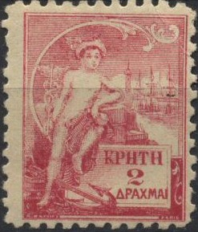

Alfred Baguet forgeries. They also exist with the cancel 'PORT-AU-PRINCE HAIT 7 SEPT 81' (sometimes even double or three times applied on one stamp).
Note: on my website many of the
pictures can not be seen! They are of course present in the
catalogue;
contact me if you want to purchase the catalogue.
Alfred Baguet forgeries. They also exist with the cancel
'PORT-AU-PRINCE HAIT 7 SEPT 81' (sometimes even double or three
times applied on one stamp).

(Probably another Baguet forgery with 'FAUX' overprint)
I've been told that the above forgeries were made by Alfred Baguet (Paris, around 1908), the bottom of the value tablet is double (below the 1 for example). The 'Q' touches the frame line above it.
Baguet also made some Newfoundlands and Crete
essays (see also there for images). Under the 5 c Newfoundland
essay, the name 'A.Baguet Gr. 58 Strasbourg Paris' can be found.
This is the same Alfred Baguet who made forgeries of the first
stamps of Haiti ('Gr.' stands for 'Graveur'?). According to the
above document the name 'William B.Hale' and 'Williamsville,
Mass, USA' can be found on the margins above some 3 c and 10 c
values (sorry, no image available yet). This is the same Hale
mentioned in 'Philatelic Forgers, their lives and works' by
V.E.Tyler.
Baguet seems to have imprisoned in Paris in 1922 for 3 months for
forging French and French colonies stamps. He apparently also
made bogus labels for Crete. The Crete labels were printed with
the above Newfoundland stamps in one sheet of 12 stamps. Baguet
apparently also lived in 4 Rue St.Laurent (not far from the 58
Rue Strasbourg address).

"Essay" of Crete, they appared first in 1902. This is
actually a bogus issue made by Baguet. It can be found printed in
sheets with other bogus stamps of Newfoundland (see there). There
also exists a 5 Drachme value with the head of Hermes. These
'essays' were printed in seven different colours.
The Baguet-Hale combination might also have been responsable for some poster stamps for the 1901 Pan American Exhibition at Buffalo. I have no further information.
Article from the American Philatelist ol 36, 1922-23, page 9 (Baguet is wrongly spelt as Bagnet!):
RARE STAMPS FORGED BY FRENCH ENGRAVER.
A most ingenious swindle, taking the form of forgery of valuable
postage stamps, has been discovered by the Paris police, who
arrested its alleged author recently.
A young engraver, whose name is given as Alfred Bagnet and is
said to be an artist of considerable talent, realizing the danger
of speedy detection of forged banknotes, decided to employ his
exceptional ability in imitating rare postage stamps for which
collectors pay very high prices. Having obtained paper exactly
corresponding to that used in the various issues chosen for
reproduction, he built a special press and engraved plates which
are said to be regular masterpieces.
Next, the engraver obtained lists of names of prominent
collectors in various countries of Europe and America and entered
into communication with them under the pretext that he was a
collector of stamps and wished to exchange or sell certain rare
examples.
On various occasions those buying from the engraver, being great
experts, subsequently discovered that the stamps delivered were
forgeries, but the clever criminal in these cases unhesitatingly
agreed, saying he had been deceived himself, and returned the
money and thus avoided trouble.
Encouraged by success, however, he seemingly overstepped the
mark, for a series of complaints to the Paris police finally led
to an investigation and his arrest.
The stamp on which the forger actually was tripped up was an
English issue engraved in 1840 by Rowland Hill.
According to the police report, the forger's profits amount to
more than 3,000,000 francs, while forged stamps of the face value
of 2,000,000 to 3,000,000 francs were found, together with his
printing press.—From N. Y. Times.
In the Express du Midi of 20-December-1922
the following text can be found on Alfred Baguet:
M. Alfred Baguet, graveur chez qui la police saisit un
matériel destiné à fabriquer des timbres et 300 kilogrammes de
vignettes estimées à 9 millions de francs a été condamné à
deux ans de prison avec sursis et à la saisie des des timbres
faux.
{kind=link}